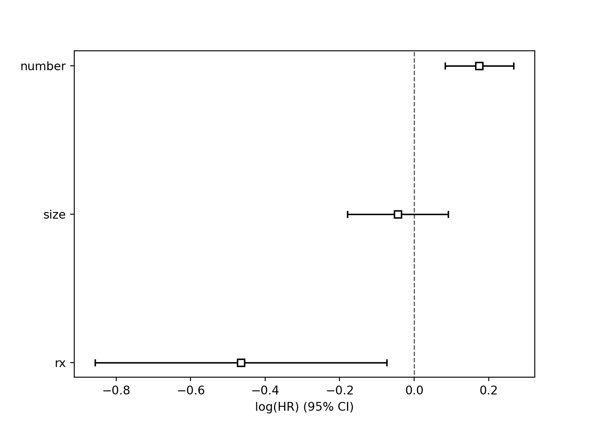

Chapter 6 Repeated Events
# Cluster model
bladder.rse <- coxph(Surv(start, stop, event == 1) ~ rx + number + size + cluster(id), data = bladder)
summary(bladder.rse)## Call:
## coxph(formula = Surv(start, stop, event == 1) ~ rx + number +
## size, data = bladder, cluster = id)
##
## n= 178, number of events= 112
##
## coef exp(coef) se(coef) robust se z Pr(>|z|)
## rx -0.46469 0.62833 0.19973 0.26556 -1.750 0.08015 .
## number 0.17496 1.19120 0.04707 0.06304 2.775 0.00551 **
## size -0.04366 0.95728 0.06905 0.07762 -0.563 0.57376
## ---
## Signif. codes: 0 '***' 0.001 '**' 0.01 '*' 0.05 '.' 0.1 ' ' 1
##
## exp(coef) exp(-coef) lower .95 upper .95
## rx 0.6283 1.5915 0.3734 1.057
## number 1.1912 0.8395 1.0527 1.348
## size 0.9573 1.0446 0.8222 1.115
##
## Concordance= 0.634 (se = 0.032 )
## Likelihood ratio test= 17.52 on 3 df, p=6e-04
## Wald test = 11.54 on 3 df, p=0.009
## Score (logrank) test = 19.52 on 3 df, p=2e-04, Robust = 11.27 p=0.01
##
## (Note: the likelihood ratio and score tests assume independence of
## observations within a cluster, the Wald and robust score tests do not).# Conditional Model - Assuming Variable Effects Same Across Strata - PWP model
bladder.con <- coxph(Surv(start, stop, event == 1) ~ rx + number + size + strata(enum)+cluster(id), data = bladder)
summary(bladder.con)## Call:
## coxph(formula = Surv(start, stop, event == 1) ~ rx + number +
## size + strata(enum), data = bladder, cluster = id)
##
## n= 178, number of events= 112
##
## coef exp(coef) se(coef) robust se z Pr(>|z|)
## rx -0.333489 0.716420 0.216168 0.204787 -1.628 0.1034
## number 0.119617 1.127065 0.053338 0.051387 2.328 0.0199 *
## size -0.008495 0.991541 0.072762 0.061635 -0.138 0.8904
## ---
## Signif. codes: 0 '***' 0.001 '**' 0.01 '*' 0.05 '.' 0.1 ' ' 1
##
## exp(coef) exp(-coef) lower .95 upper .95
## rx 0.7164 1.3958 0.4796 1.070
## number 1.1271 0.8873 1.0191 1.246
## size 0.9915 1.0085 0.8787 1.119
##
## Concordance= 0.616 (se = 0.032 )
## Likelihood ratio test= 6.51 on 3 df, p=0.09
## Wald test = 7.26 on 3 df, p=0.06
## Score (logrank) test = 6.91 on 3 df, p=0.07, Robust = 8.83 p=0.03
##
## (Note: the likelihood ratio and score tests assume independence of
## observations within a cluster, the Wald and robust score tests do not).# Conditional Model - Assuming Variable Effects change Across Strata - PWP model
bladder.con <- coxph(Surv(start, stop, event == 1) ~ strata(enum)*rx + strata(enum)*number + strata(enum)*size + cluster(id), data = bladder)
summary(bladder.con)## Call:
## coxph(formula = Surv(start, stop, event == 1) ~ strata(enum) +
## rx + number + size + strata(enum):rx + strata(enum):number +
## strata(enum):size, data = bladder, cluster = id)
##
## n= 178, number of events= 112
##
## coef exp(coef) se(coef) robust se z Pr(>|z|)
## rx -0.52598 0.59097 0.31583 0.31524 -1.669 0.09521
## number 0.23818 1.26894 0.07588 0.07459 3.193 0.00141
## size 0.06961 1.07209 0.10156 0.08863 0.785 0.43220
## strata(enum)enum=2:rx 0.02215 1.02239 0.51451 0.60852 0.036 0.97097
## strata(enum)enum=3:rx 0.66664 1.94768 0.74348 0.57671 1.156 0.24771
## strata(enum)enum=4:rx 0.57632 1.77947 0.85238 0.62678 0.919 0.35784
## strata(enum)enum=2:number -0.26282 0.76888 0.11763 0.16532 -1.590 0.11189
## strata(enum)enum=3:number -0.18852 0.82819 0.20026 0.14196 -1.328 0.18420
## strata(enum)enum=4:number -0.03390 0.96667 0.25366 0.19351 -0.175 0.86092
## strata(enum)enum=2:size -0.23033 0.79427 0.15910 0.17506 -1.316 0.18827
## strata(enum)enum=3:size 0.09849 1.10350 0.28757 0.18033 0.546 0.58497
## strata(enum)enum=4:size -0.06052 0.94128 0.35382 0.37643 -0.161 0.87228
##
## rx .
## number **
## size
## strata(enum)enum=2:rx
## strata(enum)enum=3:rx
## strata(enum)enum=4:rx
## strata(enum)enum=2:number
## strata(enum)enum=3:number
## strata(enum)enum=4:number
## strata(enum)enum=2:size
## strata(enum)enum=3:size
## strata(enum)enum=4:size
## ---
## Signif. codes: 0 '***' 0.001 '**' 0.01 '*' 0.05 '.' 0.1 ' ' 1
##
## exp(coef) exp(-coef) lower .95 upper .95
## rx 0.5910 1.6921 0.3186 1.096
## number 1.2689 0.7881 1.0964 1.469
## size 1.0721 0.9328 0.9011 1.275
## strata(enum)enum=2:rx 1.0224 0.9781 0.3102 3.370
## strata(enum)enum=3:rx 1.9477 0.5134 0.6290 6.031
## strata(enum)enum=4:rx 1.7795 0.5620 0.5209 6.079
## strata(enum)enum=2:number 0.7689 1.3006 0.5561 1.063
## strata(enum)enum=3:number 0.8282 1.2075 0.6270 1.094
## strata(enum)enum=4:number 0.9667 1.0345 0.6616 1.412
## strata(enum)enum=2:size 0.7943 1.2590 0.5636 1.119
## strata(enum)enum=3:size 1.1035 0.9062 0.7750 1.571
## strata(enum)enum=4:size 0.9413 1.0624 0.4501 1.969
##
## Concordance= 0.629 (se = 0.036 )
## Likelihood ratio test= 14.5 on 12 df, p=0.3
## Wald test = 20.29 on 12 df, p=0.06
## Score (logrank) test = 15.73 on 12 df, p=0.2, Robust = 15.8 p=0.2
##
## (Note: the likelihood ratio and score tests assume independence of
## observations within a cluster, the Wald and robust score tests do not).# Gap Time Model - Assuming Variable Effects Same Across Strata #
# Can easily extend the gap time model to assume variable effects different same as above. #
bladder.gap <- coxph(Surv(time = (stop - start), event == 1) ~ rx + number + size + strata(enum) +cluster(id), data = bladder)
summary(bladder.gap)## Call:
## coxph(formula = Surv(time = (stop - start), event == 1) ~ rx +
## number + size + strata(enum), data = bladder, cluster = id)
##
## n= 178, number of events= 112
##
## coef exp(coef) se(coef) robust se z Pr(>|z|)
## rx -0.279005 0.756536 0.207348 0.215624 -1.294 0.19569
## number 0.158046 1.171220 0.051942 0.050940 3.103 0.00192 **
## size 0.007415 1.007443 0.070023 0.064333 0.115 0.90824
## ---
## Signif. codes: 0 '***' 0.001 '**' 0.01 '*' 0.05 '.' 0.1 ' ' 1
##
## exp(coef) exp(-coef) lower .95 upper .95
## rx 0.7565 1.3218 0.4958 1.154
## number 1.1712 0.8538 1.0599 1.294
## size 1.0074 0.9926 0.8881 1.143
##
## Concordance= 0.596 (se = 0.032 )
## Likelihood ratio test= 9.33 on 3 df, p=0.03
## Wald test = 11.84 on 3 df, p=0.008
## Score (logrank) test = 10.27 on 3 df, p=0.02, Robust = 9.92 p=0.02
##
## (Note: the likelihood ratio and score tests assume independence of
## observations within a cluster, the Wald and robust score tests do not).6.1 Python Code for repeated events
Python can do the first model mentioned above (treating each individual as a cluster). It cannot incorporate the stratified models.
from lifelines import CoxTimeVaryingFitter
import pandas as pd
import numpy as np
import matplotlib.pyplot as plt
bladder = r.bladder
bladder1 = bladder.drop('enum',axis=1)
ctv = CoxTimeVaryingFitter()
ctv.fit(bladder1, id_col="id", event_col="event", start_col="start", stop_col="stop", show_progress=True)## Iteration 1: norm_delta = 4.39e-01, step_size = 0.9500, log_lik = -458.73935, newton_decrement = 9.76e+00, seconds_since_start = 0.0
## Iteration 2: norm_delta = 5.93e-02, step_size = 0.9500, log_lik = -450.30769, newton_decrement = 3.17e-01, seconds_since_start = 0.0
## Iteration 3: norm_delta = 5.88e-03, step_size = 0.9500, log_lik = -449.98339, newton_decrement = 2.74e-03, seconds_since_start = 0.0
## Iteration 4: norm_delta = 3.39e-04, step_size = 1.0000, log_lik = -449.98065, newton_decrement = 8.10e-06, seconds_since_start = 0.0
## Iteration 5: norm_delta = 8.73e-08, step_size = 1.0000, log_lik = -449.98064, newton_decrement = 5.25e-13, seconds_since_start = 0.0
## Convergence completed after 5 iterations.
## <lifelines.CoxTimeVaryingFitter: fitted with 178 periods, 85 subjects, 112 events>## <lifelines.CoxTimeVaryingFitter: fitted with 178 periods, 85 subjects, 112 events>
## event col = 'event'
## number of subjects = 85
## number of periods = 178
## number of events = 112
## partial log-likelihood = -449.98
## time fit was run = 2024-10-23 14:09:47 UTC
##
## ---
## coef exp(coef) se(coef) coef lower 95% coef upper 95% exp(coef) lower 95% exp(coef) upper 95%
## covariate
## rx -0.46 0.63 0.20 -0.86 -0.07 0.42 0.93
## number 0.17 1.19 0.05 0.08 0.27 1.09 1.31
## size -0.04 0.96 0.07 -0.18 0.09 0.84 1.10
##
## cmp to z p -log2(p)
## covariate
## rx 0.00 -2.33 0.02 5.64
## number 0.00 3.72 <0.005 12.27
## size 0.00 -0.63 0.53 0.92
## ---
## Partial AIC = 905.96
## log-likelihood ratio test = 17.52 on 3 df
## -log2(p) of ll-ratio test = 10.82